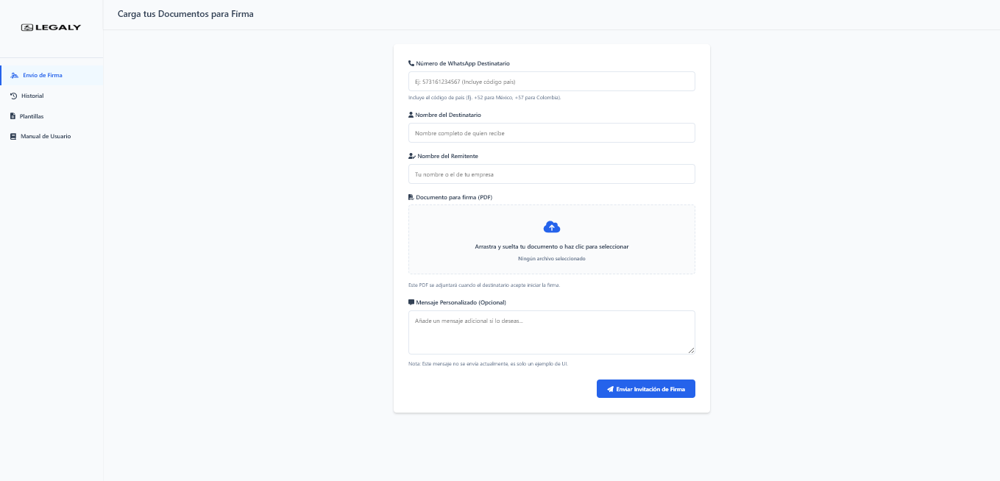
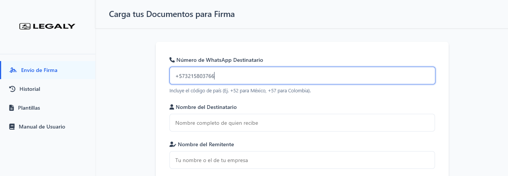
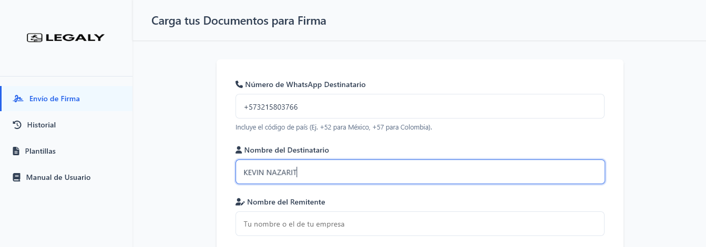
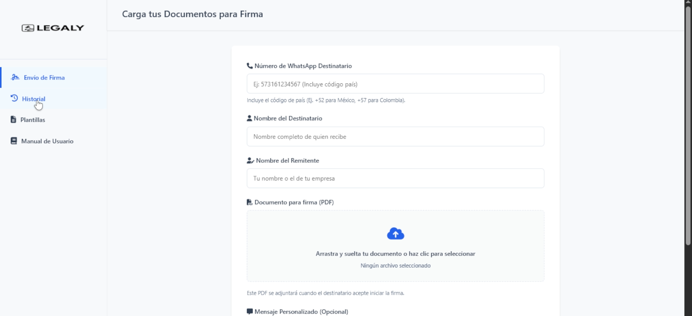
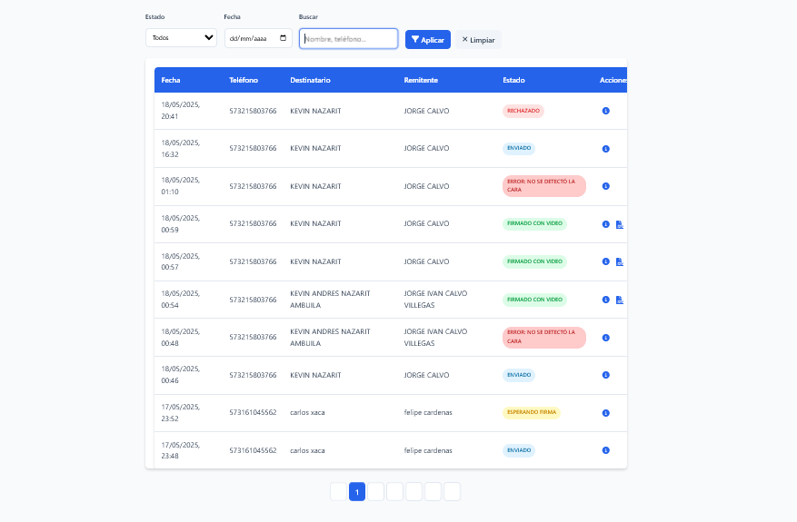

Introducción a Legaly
Bienvenido a Legaly, la plataforma que te permite enviar documentos para firma digital de manera segura y rápida a través de WhatsApp. Este manual te guiará paso a paso en el uso de todas las funcionalidades de nuestra plataforma.
¿Qué es Legaly?
Legaly es una plataforma que permite a empresas y profesionales enviar documentos para firma electrónica a través de WhatsApp, simplificando el proceso de obtención de firmas y asegurando la validez legal de las mismas.

Vista general de la plataforma Legaly
1
Cómo enviar un documento para firma (1/3)
Sigue estos sencillos pasos para enviar un documento a firmar:
1
Ingresa el número de WhatsApp del destinatario
Escribe el número de teléfono completo incluyendo el código del país (Ej: 573161234567 para Colombia).
Asegúrate de que el número tenga WhatsApp activo.

2
Ingresa el nombre del destinatario
Escribe el nombre y apellido de la persona que firmará el documento.

2
Cómo ver el historial de documentos
Puedes acceder al historial de todos los documentos enviados para monitorear su estado:
1
Accede a la sección de Historial
Haz clic en la opción "Historial" en el menú lateral izquierdo.

2
Visualiza el estado de tus documentos
Podrás ver todos los documentos enviados con su estado actual, fecha de envío y destinatario.

5
Estados de los documentos
Estados de documentos
Los documentos pueden tener varios estados:
- Enviado: El documento fue enviado pero aún no ha sido firmado.
- Firmado: El documento ya fue firmado por el destinatario.
- Rechazado: El destinatario rechazó la firma del documento.
- Expirado: El plazo para firmar el documento ha vencido.
Plantillas (Próximamente)
Las plantillas te permiten agilizar el envío de documentos recurrentes:
Próximamente
La función de plantillas estará disponible en próximas actualizaciones.
Las plantillas te permitirán:
- Guardar documentos de uso frecuente
- Establecer campos para personalizar rápidamente
- Enviar el mismo documento a múltiples destinatarios
- Ahorrar tiempo en el proceso de envío
6